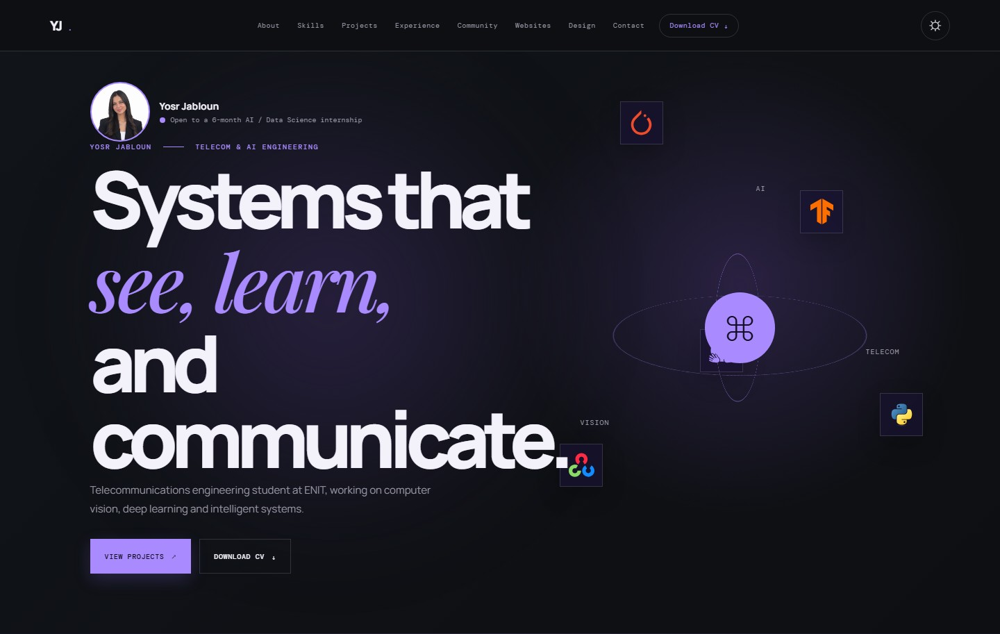

Yosr Jabloun
Telecommunications Engineering · ENIT
I work across AI, computer vision and intelligent systems, turning research into practical tools.
Open to a 6-month AI / Data Science internship
Deep LearningComputer VisionWorld ModelsIEEE LeaderDesign
portfolio2-ecru-gamma.vercel.app